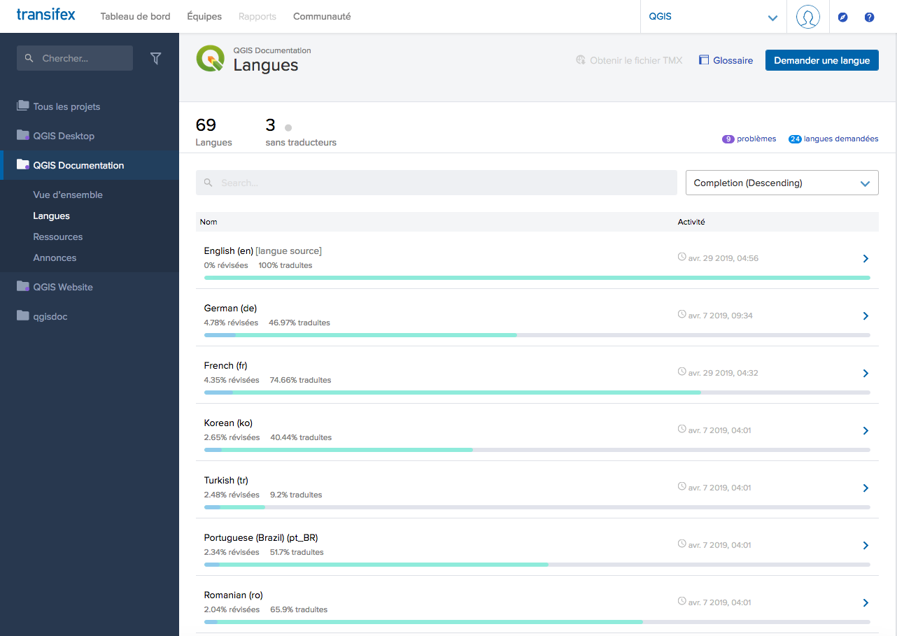
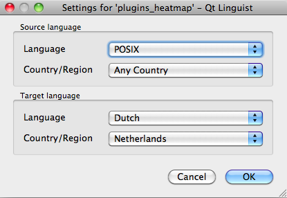

This manual is aiming to help the translator.
First the general process of how technically a translation is done
is explained. Later the translation is explained from an actual English
rst document that is translated to Dutch.
Finally a summary of Rules of translation is given.
Note
Although these guidelines focus on QGIS documentation, the methods and
the rules described below are also applicable to QGIS applications and
website translation.
QGIS Documentation is written in English with .rst files.
In order to provide translations:
A prebuild script creates translation files named .po files for the
English language in the folder /QGIS-Documentation/locale/en.
The sentences in the .po files are pushed to the Transifex web platform,
and made available for translators who can begin to translate from English to their
language with the editor.
When a file is translated at 100%, the translated strings are automatically
pulled back to the documentation repository, under /QGIS-Documentation/locale/<language>.
At the next build of the documentation (which occurs at least once a day – see time at the bottom of the page),
a script reuses the sentences to create translated output.
For files not fully translated, a script pulls every two weeks translated strings
from Transifex to Github and these are as well published at the next build.
Whenever an .rst file is updated, the English .po file is
updated and the changes are pushed to the corresponding file in Transifex.
This means that when a new paragraph is added to an .rst document that was already translated,
only the new/updated sentences are added to the translated .po file
and needs to be translated.
Note
Translating QGIS Desktop specificities
The main difference with translating QGIS applications is that instead of .po files,
all the translatable strings in the .py, .cpp, .yaml files
that shape a particular version of the application are pushed to and pulled from Transifex
as a single .ts file (e.g. qgis-application/qgis_en.ts(branchrelease-3_30) ).
Translations are pulled to Github in development branch (daily),
and at release time (for every released versions).
Two different tools are currently used to do translations in QGIS:
The Transifex web platform, the easiest and
recommended way to translate QGIS,
transparently does the process described above and pulls all the translatable
texts in one place for the translator. Just pick the files you want and translate.
Translated files are stored in the platform until another release is pushed.
Qt Linguist, a Qt
development tool, requires the translator to pull locally
the .po (or .ts) files from the source code, translate and
then push back.
Note that whatever tool you choose, rules of translations are the same.
To explain how translation works, we will use the heatmap plugin as an example.
In this example we will translate it from English to Dutch, but it will
be practically the same for other documents in all languages.
Once you are part of a language team, click on the corresponding project
(in this case QGISDocumentation). A list of available languages with
their ratio of translation is displayed.

Fig. 4.20 Select language for translation in the Transifex menu
Hover over your language and click either:
View resources: translatable .po files with their ratio
of translation, number of strings and some more metadata are now displayed.
or Translate: opens the interface of translation with all the
available .po files
Identify the file you’d like to translate (in our case we are looking for the
docs_user-manual_plugins_plugins-heatmap, the heatmap plugin file)
or any unfinished file and click on it: strings in the files are loaded
and you can use the interface to filter, translate, suggest translation…
Tip
For the documentation or the website, clicking the Fixme link
in the footer of a page brings you directly to its corresponding translation
page in Transifex.
All you need to do is select each text and translate following the
guidelines.
manually grab the .po or .ts file(s). This can be achieved
by downloading the file(s) either from Transifex platform or from the
locale/$language folder of the source repository (in GitHub),
proceed to the translation locally
upload the modified files to their sources (Transifex or GitHub).
While downloading and uploading translatable files can be done with Transifex,
it’s not advised to use this process. Since there’s no
versioning system on Transifex, the file you upload will simply replace the
existing one and potentially overwrite any modification made by others on the
platform in the meantime.
When you open the file in Qt Linguist for the first time you will see the
following dialog:

Fig. 4.21 Select language for translation in linguist menu
The Target language should be filled correctly. The Source language can be left
as is with language POSIX and Country/Region on Any Country.
When you press the OK button Qt Linguist is filled with sentences and
you can start translating, see Fig. 4.22.
In the menu you see the following buttons which are convenient to use.
The Translation Done Next button, is the most important
button. If the item needs translation, you enter a translation in the text
field, then hit this button. If the item does not need translation just leave the
text field for translation empty and also hit this button which indicates the
item is done and you continue with the next item.
The Goto Previous button, can be used to go to the
previous translation item.
The Goto Next button, can be used to go to the next
translation item.
The Next Todo button, jumps to the first translation
item that still needs a translation. Handy when the original document has
changed and only several new/changed sentences need to be translated.
The Previous Todo button, searches backward and
jumps to the first translation item it finds that still needs a translation.
If you want to download content to translate from the source
repository, never do this in the master branch. For translations
there are always translation branches available, once a document is fully
updated in English for a certain version. As an example, to translate
the manual of QGIS 2.8, you have to use the manual_en_v2.8 branch.
Now we start to translate the plugin_heatmap manual!
Translating most of the sentences should be straightforward.
During this translation session I will point out which parts (rst statements)
need special translation.
Below we see an interesting sentence to translate:
The |heatmap| :sup:`Heatmap` plugin allows to create a heatmap from a
point vector map. A heatmap is a raster map showing the density or
magnitude of point related information. From the result "hotspots" can
easily be identified.
This sentence contains two rst statements:
|heatmap| words between | are replacements and these should never
be translated! This will be replaced by the heatmap plugin icon!
:sup:`Heatmap`, the :sup: statement is a superposition statement
and prints the following text a bit higher. This is used to show the popup
texts that appear when you hover above the toolbar item and this may be
different when it is actually translated in the QGIS application. In the
Dutch case it is not!
All other plain text in this sentence can be translated!
The next translation item contains the :ref: statement that is
commonly used to refer to another section somewhere in the manual! The text
following a :ref: statement should never be changed because it is a unique
identifier!
First this core plugin needs to be activated using the Plugin Manager
(see Section :ref:`load_core_plugin`). After activation the heatmap icon
|heatmap| can be found in the Raster Toolbar.
In this case load_core_plugin is a unique reference identifier placed before
an rst item that has a caption. The ref statement will be replaced with the text
of the header and turned into a hyperlink. When the header this reference is
referring to is translated, all references to this header will be automatically
translated as well.
The next item contains the rst-tag :menuselection: followed by text
actually displayed in a menu in QGIS application, this may be translated in the
application and therefore should be changed when this is the case.
Select from menu :menuselection:`View --> Toolbars --> Raster` to activate
the Raster Toolbar when it is not yet activated.
In above item “View –>” is actually translated to “Beeld –>” because this is
the translation used in the Dutch localized QGIS application.
A bit further we meet the following tricky translation item:
The |heatmap| :sup:`Heatmap` tool button starts the Dialog of the Heatmap
plugin (see :numref:`figure_heatmap_settings`).
It holds a reference to a figure figure_heatmap_settings_, and like a reference
to a section this reference should not be changed!! The reference definition
from the rst-document is not included in the .po file and can therefore
not be changed. This means the reference to figures can not be translated. When
HTML is created you will see figure_heatmap_settings. When a PDF document is
created figure_heatmap_settings_ is replaced with a figure number.
The next translation item with rst attributes is the following item:
**Input Point dialog**: Provides a selection of loaded point vector maps.
Do not remove the stars in above line. It will print the text it holds in bold.
The text itself is often text included in the dialog itself and may well be
translated in the application.
The following translation item contains the :guilabel: rst tag.
When the |checkbox| :guilabel:`Advanced` checkbox is checked it will
give access to additional advanced options.
The text Advanced of the guilabel tag may well be translated in the QGIS
application and probably needs to be changed!
The following translation item contains ``airports``. The quotes are
used to give the text another text font. In this case it is a literal value and
does not need translation.
For the following example, we will use the ``airports`` vector point
layer from the QGIS sample dataset (see :ref:`label_sampledata`).
Another excellent QGIS tutorial on making heatmaps can be found on
`https://www.qgistutorials.com
<https://www.qgistutorials.com/en/docs/creating_heatmaps.html>`_.
This item also includes a hyperlink with an url and an external presentation.
The url should of course be left intact, you are allowed to change the external
text https://www.qgistutorials.com which is visible by the reader. Never
remove the underscore at the end of the hyperlink which forms an essential
part of it!!
Do not change text between two | characters like |bronze|, |checkbox|,
|labels|, |selectString|, |addLayer| … These are special tags
used to replace images
Do not change references that start with roles like :ref:, :file:,
:numref: unless they include a title. In that case, you can translate the title
but keep unchanged the link (i.e., the text between < and >)
Tip
When a title is provided for a reference, Transifex may display a number
in the English source text in replacement of the link part. Click on the number
in the source text to add the reference link next to the title being translated.
Do not change references that end with an underscore like figure_labels_1_
Do not change the url in hyperlinks, but you may change the external
description. Leave the underscore at the end of the hyperlink,
without additional spacing (>`_)
Change the text inside quotes following :index:,
:sup:, :guilabel: and :menuselection: tags.
Check if/how it is translated in the QGIS Application. Do not change the tag itself.
Text between double stars and double quotes often indicate values or
fieldnames, sometimes they need translation sometimes not.
Be aware to use exactly the same (number of) special characters of the source
text such as `, ``, *, **, ::. These contribute to the
cosmetics of the information provided
Do not begin nor end the text hold by special characters or tags with a space
Do not end the translated strings with a new paragraph, otherwise the
text will not be translated during the html generation.
Stick to above presented rules and the translated document will look fine!

 The Goto Previous button, can be used to go to the
previous translation item.
The Goto Previous button, can be used to go to the
previous translation item. The Goto Next button, can be used to go to the next
translation item.
The Goto Next button, can be used to go to the next
translation item. The Previous Todo button, searches backward and
jumps to the first translation item it finds that still needs a translation.
The Previous Todo button, searches backward and
jumps to the first translation item it finds that still needs a translation.{kind=link}
{kind=link}